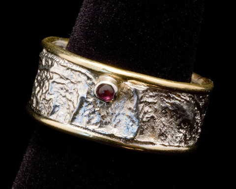
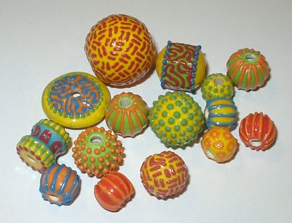
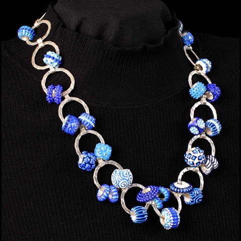

Home Page Resume Jewelry Acrylic Paintings
Evelyn Peckham
Arvey
3817 41st Avenue NE
Seattle, WA 98105
206-524-7104
ARTIST'S STATEMENT
"Art excites and consumes me. Pattern, texture, and
vibrant, bold color are the focus of my work. The bright colors and moving patterns
in my work are an extension of myself, a manifestation of my life experience. I
enjoy working in a variety of mediums, including jewelry, ceramics, and acrylic
painting."
EDUCATION
Bachelor of Fine Arts in Painting, University of
Washington: I studied painting with Michael Spafford and ceramics with Howard
Kottler (1993). Jewelry Fabrication: I studied at North Seattle Community
College for 2 1/2
years with Lynne Hull.
|
   |
SELECTED
ANNUAL
SHOWS Bellevue
Festival of the Arts, Best
of the Northwest, Puget Sound Bead Festival
SELECTED
GALLERY SHOWS 2008 Featured Speaker at Portland Bead Society 2007 Featured Speaker at Puget Sound Bead Society 2005 -
2007 Trunk Show, Beads and Beyond, Bellevue, 2003
Ceramics 2003, The 4th Biennial Exhibit of Clay, 2001
Union of American Hebrew Congregations 66th Biennial
Convention (Conversion Series), Boston, MA 2001
Jewelry Symposium Show, 1998
Museum Exhibition, “Journeys to Freedom”, 51 piece Passover
Seder Table Setting, 1997
“Conversion Series”, (One Person Show), 1997
“Best of the Fair Exhibition”, (Group Show), Anderson Glover
Gallery, Kirkland, 1994
“Children at Play”, (One Person Show), In*Sights! Gallery, 1993
BFA Show, |
Home Page Resume Jewelry Acrylic Paintings
To contact Vivid Arts:
Phone: 206-524-7104
Fax: 206-524-7104
Email: micha@wport.com